Les adaptations dans l'univers du jeu vidéo
L'univers du jeu video ne se limite pas uniquement à une expérience virtuelle, il s'étend aussi au niveau des films, séries, bandes dessinées ou romans qui prennent une importance croissante, tant sur le plan économique que culturel. Ces adaptations attirent donc un public plus large tout en renforçant l’impact des univers vidéoludiques sur la culture populaire mondiale. Cependant, elles créent de nombreuses questions sur leur fidélité et leur qualité.
Pixels
Pixels est une comédie d'action réalisée par Chris Columbus en 2015, mettant en scène Adam Sandler, Kevin James, Michelle Monaghan, Peter Dinklage et Josh Gad interpretants respectivement:
Sam Brenner, un ancien champion de jeux vidéo maintenant technicien.
Will Cooper, président des Etats-Unis et ancien camarade de jeu de Sam.
Violet Van Patten, lieutenant colonel de l'armée américaine.
Eddie Plant, un ancien champion de jeux vidéo et expert en arcade mais surtout tricheur.
Ludlow Lamonsoff, un jeune prodige de la technologie et fan de jeux vidéo.


Le film s'inspire de vieux jeux vidéo des années 1980 qui prennent vie sous forme d'extraterrestres hostiles comme:
Pac-Man: jeu d'arcade créé par Namco en 1980 où l'on contrôle Pac-Man, une mascotte ronde et jaune, qui doit traverser un labyrinthe tout en mangeant des pac-gommes. L'objectif est de manger toutes les pac-gommes sans se faire capturer par les quatre fantômes, qui se déplacent aussi dans ce labyrinthe: Inky, Blinky, Pinky et Clyde.
Donkey Kong: jeu d'arcade et de platforme lancé par Nintendo en 1981 où l'on incarne Mario, appelé Jumpman à l'époque, qui doit sauver une demoiselle en détresse, capturée par le gorille géant Donkey Kong qui nous lance des tonneaux en guise d'obstacles à travers les différents niveaux.
Centipede: jeu d'arcade du style "Shoot em'up" lancé en 1980 par Atari. Dans ce jeu nous sommes piégés dans la forêt enchantée et nous ne disposons que d'une baguette magique pour repousser les insectes de la forêt qui nous attaquent par vagues successives.
Space Invaders: jeu d'arcade du style "Shoot'em up" développé par Taito et sorti en 1978. Le principe est de détruire des vagues d'aliens avec un canon laser en se déplaçant horizontalement sur l'écran.
Tetris: jeu de réflexion conçu par Alekseï Pajitnov en 1984. Il faut y emboîter des briques de formes différentes (les tétrominos) afin de créer des lignes et ainsi gagner des points.


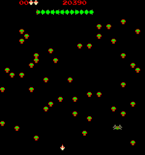


Sonic
Sonic the Hedgehog ou plus simplement Sonic, est une série de jeux vidéo, développée par la firme japonaise Sega depuis 1991.


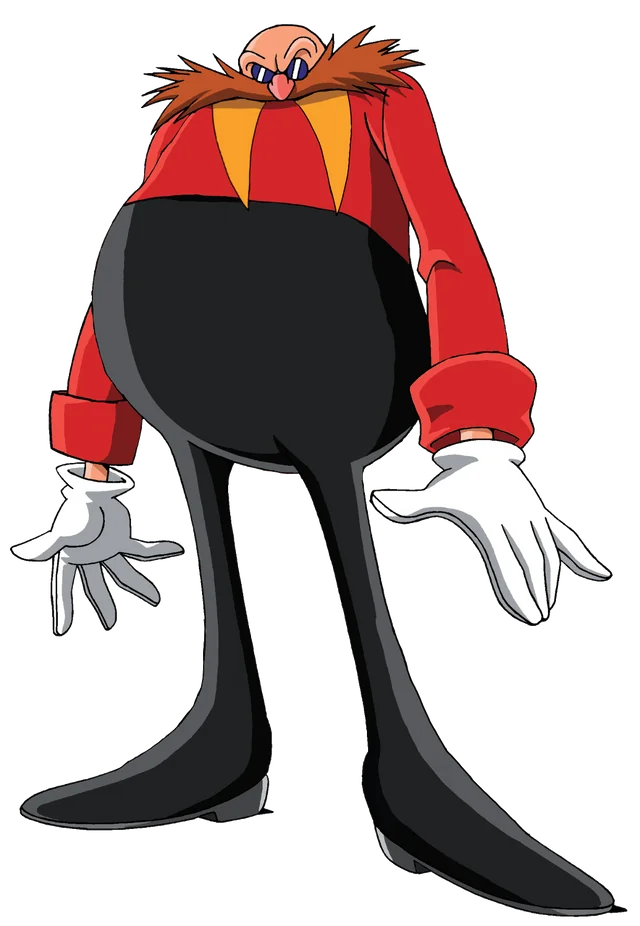
Elle met en avant la mascotte Sonic, un hérisson (hedgehog en anglais) bleu humanoïde, luttant contre l'antagoniste principal de la série, le Dr Robotnik ou aussi appelé Dr Eggman. La série met en avant Sonic et ses alliés tentant de sauver le monde de différentes menaces. Le principal antagoniste de la série est au début le Dr Eggman qui tente de créer un empire dominé par les robots. Par la suite, d'autres ennemis font leur apparition et convoitent, dans tous les jeux vidéos, les Émeraudes du chaos, des artefacts contenants des puissantes sources d'énergies.

Le film reprend ces deux personnages cependant l'histoire est différente. Sonic vient d'une autre planète et une guerre de clans y démarre. Afin qu'il soit en sécurité, il fut envoyé sur Terre grâce à des anneaux. Des années plus tard, il tente de vivre dans la complexité de la vie sur Terre, aux côtés de son nouveau meilleur ami, Tom Wachowski (interprété par James Marsden), un humain. Sonic et Tom unissent leurs forces pour tenter d'empêcher le terrible Dr. Eggman (interprété par Jim Carrey) de capturer Sonic, ce dernier souhaitant utiliser son immense pouvoir pour dominer le monde.


Minecraft

Minecraft est un jeu vidéo d'aventure créé par Markus Persson, alias Notch, puis développé par Mojang Studios, filiale de Microsoft.


Lancé en 2011, il est rapidement devenu l'un des jeux les plus populaires et influents au monde. Son succès a même inspiré des livres,
des films, des événements et a permis la formation d'une communauté mondiale de joueurs de tous âges, qui créent des mods, des
cartes et des ressources afin d'obtenir une expérience encore plus plaisante.
Minecraft est un jeu "bac à sable", c'est-à-dire un monde ouvert, sans réél objectif, où les joueurs peuvent utiliser leur
imagination comme bon leurs semblent en construisant des structures, en créant des civilisations ou en faisant un "speedrun"
du jeu, c'est-à-dire vaincre le boss le plus vite possible qui est l'Ender Dragon, situé dans l'une des trois dimensions du
jeu:
La première est l'Overworld, qui est la dimension par défaut où le joueur commence, comportant des cycles jour/nuit et météorologiques comme:
De la pluie
De l'orage
De la neige


Des biomes variés:
La jungle
Le désert
Le marais
La forêt

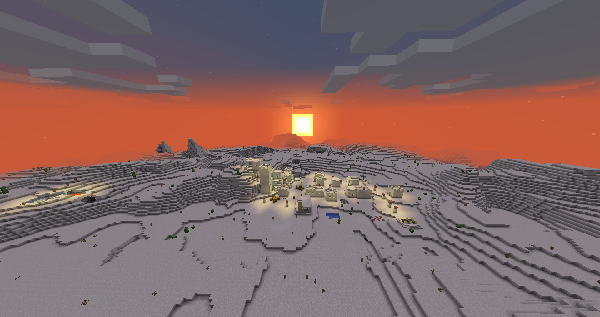
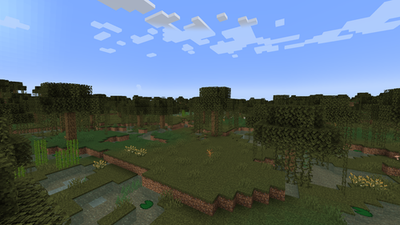
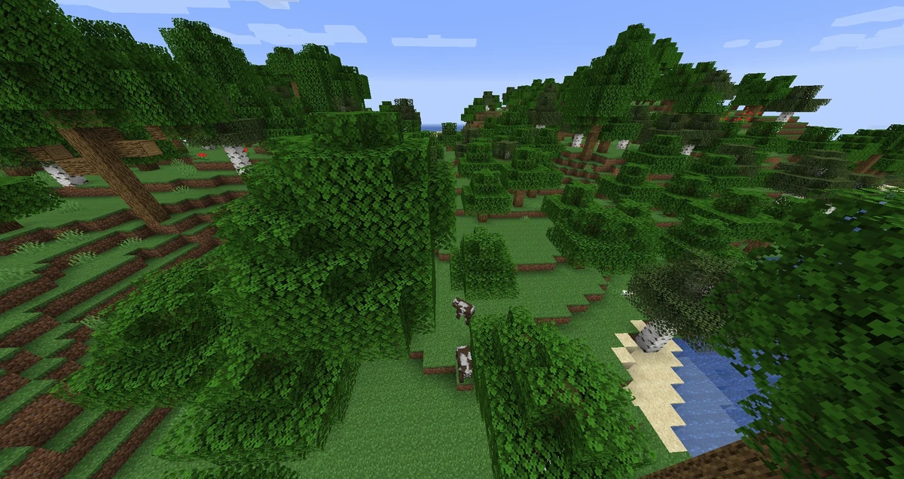
Avec des animaux:
Des vaches
Des moutons
Des loups
Des chats


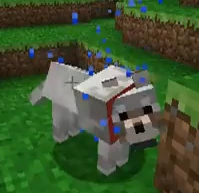

Ou bien des monstres aussi appelés "mobs":
Des creepers
Des araignées
Des zombies
Des squelettes
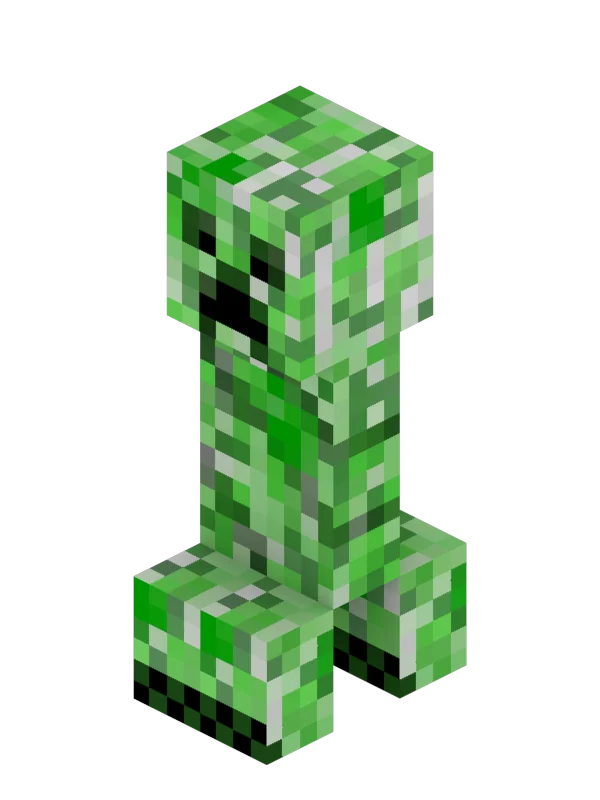


Ensuite il y a le Nether, signifiant "le néant", qui est une dimension infernale et hostile, accessible via un portail en obsidienne ouvert grâce à un briquet, composée 5 biomes:

La Forêt Carmin
La Forêt Biscornue
La Vallée des Sables des Âmes
Les Terres Désolées du Nether
Les Deltas de Basalte


Et de monstres bien plus dangereux:
Des ghasts
Des piglins
Des blazes
Des wither squelettes
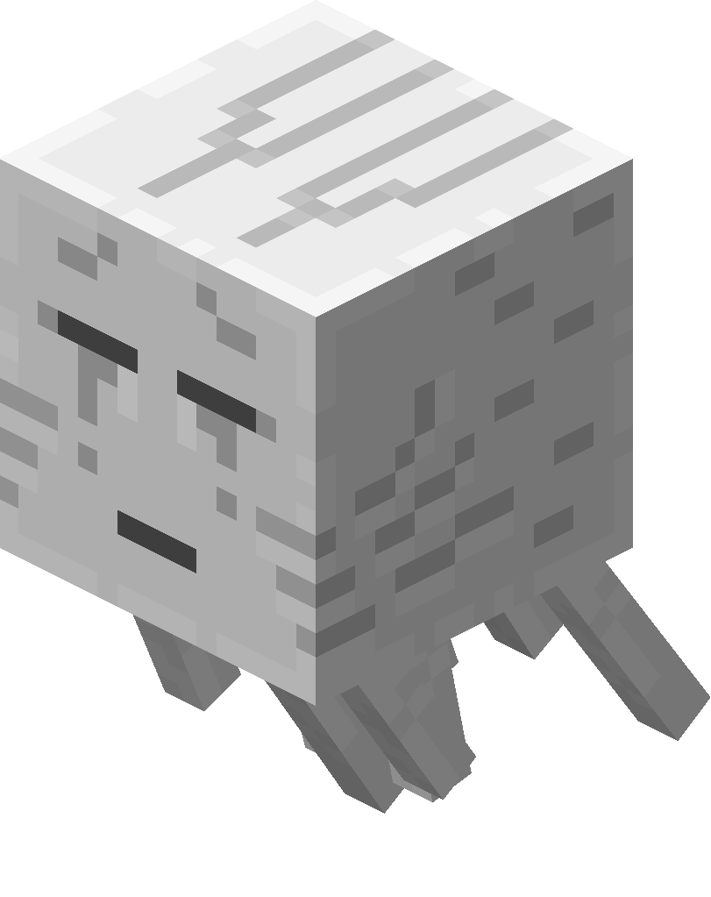

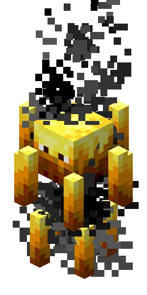

Et pour finir, l'End, signifiant littéralement "la fin", que l'on peut accéder en réparant et activant un portail de l'End, est composée de 2 biomes:


L'Ile Centrale, composée de piliers d'obsidienne avec des cristaux de l'End, qui comporte des mobs comme:


L'Ender Dragon
Des endermans

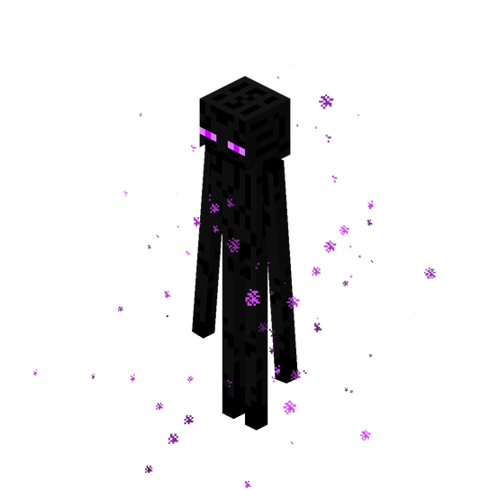
Les Iles Extérieures, qui comportent dans leurs cités de l'End:
Des shulkers
Des elytras


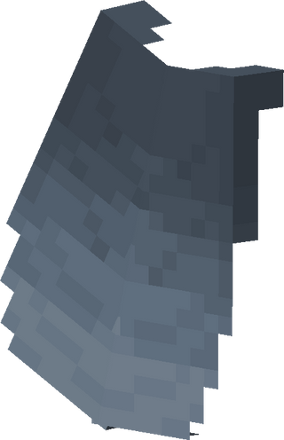
Il existe d'autres dimensions comme l'Aether mais ce sont des dimensions non officielles créées par la communauté.

Le film Minecraft reprends cette idée de bac à sable en incluant une histoire, celle de Steve, qui est aussi le nom d'un des personnages jouables. De plus, le deuxième personnage jouable, nommé Alex, fait une apparition à la fin du film.

Quatre outsiders, Garrett (Jason Momoa), Henry (Sebastian Hansen), Natalie (Emma Myers) et Dawn (Danielle Brooks), sont soudainement projetés à travers un mystérieux portail menant à l'Overworld, un incroyable monde cubique existant grâce à l'imagination. Pour rentrer chez eux, il leur faudra maîtriser ce monde de création infinie et le protéger de créatures maléfiques comme les Piglins et les Zombies, tout en s'engageant dans une quête fantastique aux côtés de Steve (Jack Black), expert fabricateur de Minecraft qui découvrit ce monde 20 ans plus tôt. Cette aventure les poussera à être braves et à développer leur créativité.


Five Nights At Freddy's

Five Nights At Freddy's est une série de jeux d'horreur lancée par Scott Cawthon en 2014 où l'on incarne un garde de nuit dans une pizzeria dans les années 80, années où ces pizzerias familiales comportait des animatroniques, des créatures de forme animale ou humaine animée mécaniquement mais ceux de ce restaurant deviennent mystérieusement hostiles la nuit.

Il faut alors survire toute la nuit (de minuit à 6 heures du matin) tout en surveillant l'activité des animatroniques et cela 5 fois pour gagner le jeu. La difficulté augmente à chaque niveau mettant notre attention à rude épreuve. Si l'on échoue, l'un des animatroniques, tel que Freddy, Bonnie, Chica ou Foxy, nous fait un "screamer", une attaque ou une image qui apparaît soudainement visant à surprendre ou effrayer les joueurs.
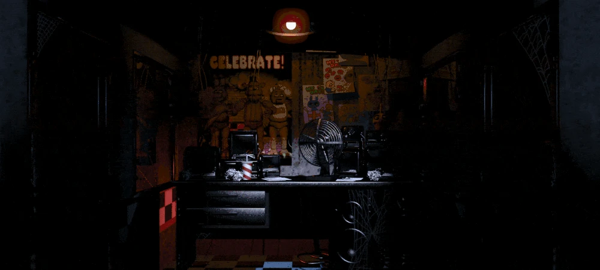
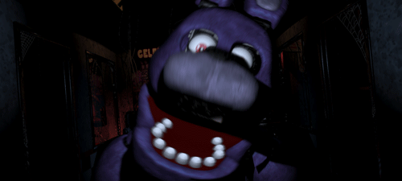
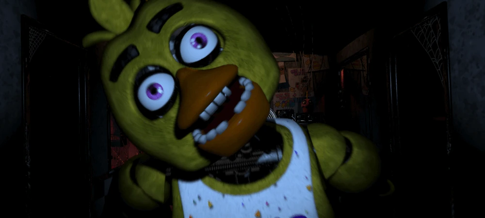
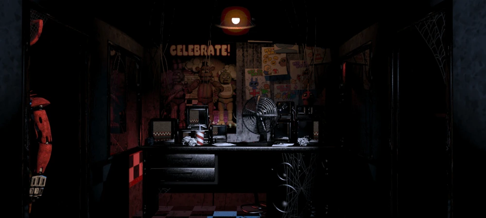
Ces animatroniques sont en fait habités par les esprits d'enfants victimes de meurtres par William Afton (joué par Matthew Lillard), un tueur en série qui kidnappe et tue des enfants lui-même devunu un animatronique, qui deviennent des âmes qui hantent les animatroniques. Ces animatroniques ont aussi obtenu la conscience de leurs victimes, ce qui explique leur comportement agressif pour se venger et trouver la paix.

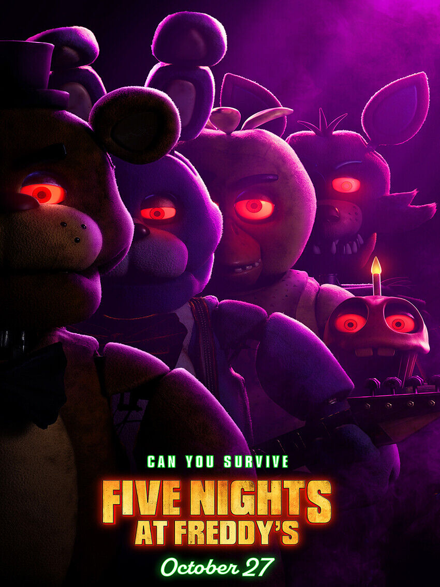
Le film reprend le même principe où l'on suit Mike Schmidt (joué par Josh Hutcherson), un jeune homme qui accepte un emploi de
gardien de nuit dans le restaurant d'attractions Freddy Fazbear's Pizza. Ce lieu est connu pour ses animatroniques animés qui
divertissent les enfants.
Cependant, Mike découvre rapidement que ces animatroniques semblent avoir une vie propre et mystérieuse,
et que le restaurant cache de sombres secrets liés à des événements passés. Alors qu'il travaille la nuit, il doit faire face à
des phénomènes étranges et essayer de survivre face à ces animatroniques devenus dangereux, tout en découvrant la vérité derrière
l'histoire sanglante du lieu.


Ready Player One

Ready Player One est un film de science-fiction produit par Steven Spielberg mais n'est pas une adaptation d'un jeu vidéo mais d'un roman écrit par Ernest Cline en 2012.

C'est l'histoire de Wade Owen Watts, un orphelin vivant dans la pauvreté plus connu sous le nom de "Parzival" (interprété par Tye Sheridan), son nom d'avatar dans un système de réalité virtuelle ressemblant à un jeu en ligne massivement multijoueur qui est devenu une société virtuelle où toute l'humanité se réfugie. L'un des créateurs, avant sa mort, avait annoncé que serait propriétaire de sa fortune et de sa société la personne qui réussira à trouver l’Easter Egg (« Œuf de Pâques »), terme renvoyant à une œuvre ou une fonction cachée au sein d'un programme, ici caché dans le jeu. En parcourant les archives du défunt, il découvre une information pouvant l’aider à trouver la première Clef, et peut-être les autres, pour accéder au secret et devenir l’héritier de cet empire grâce à l'aide de ces amis.